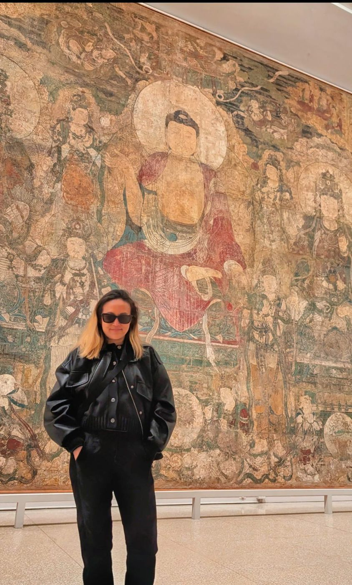

A slower practice of noticing what matters.
This is the unearthing half of my work. I write, I run Authentic Relating workshops, and I’m building a meditation practice to share in 2027.


Authentic Relating
Authentic Relating is a set of practices for saying what’s true in the moment and staying with what happens next. In a workshop we slow conversation down: noticing what we feel, asking what we’re actually curious about, and letting other people see us.
I’m a certified Authentic Relating Training facilitator. My workshops include The Self Reveal, on integrating the different parts of who we are through relating.

Essays and poems
Essays on identity, power and work, and poems written on retreat. A range to start with:
- The Startup Culture ProblemWork · Sept 2021
Burnout, blurred boundaries, and the norms founders inherit.
- Authenticity in the American WorkplaceWork & identity · Dec 2021
Who gets to bring their whole self to work, and what it would take to change that.
- The Paralysis of Fuck YesDeciding · Nov 2021
When a popular rule for decisions keeps you from making any.
- Assimilation: The Name GameIdentity · Aug 2021
On names, pronunciation, and growing up Asian American.
- Jack of All Trades, Master of Self.Self · Dec 2021
What yoga, running, scuba and other hobbies taught me.
- Not-KnowingPoem · Jan 2024
Written on New Year’s Day, at the end of a retreat.
Meditation, for people who think they can’t sit still.
I taught yoga with a focus on meditation and mindful movement, and I’m shaping that into something new. Follow along on Instagram to hear first.